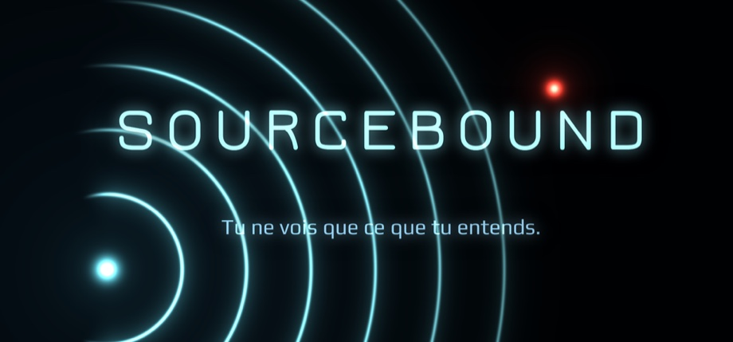
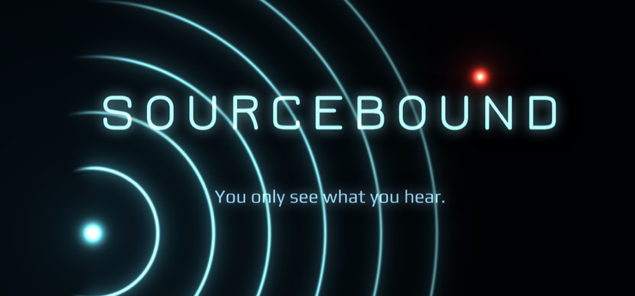
Sourcebound
L'écran est noir. Le son est ta seule lumière. Chaque pas, chaque pulsation sonar, chaque cliquetis de chasseur lance une onde qui dessine les murs en néon — puis l'obscurité les reprend. Avance en silence et tu n'y vois presque rien. Fais du bruit et tout le niveau sait où tu es. The screen is black. Sound is your only light. Every footstep, every sonar pulse, every click of a hunter sends out a wave that paints the walls in neon — and then the dark takes them back. Move quietly and you see almost nothing. Make noise and the whole level knows where you are.
Tu ne vois que ce que tu entends.You only see what you hear.
Sourcebound est un jeu d'infiltration vu de dessus où rien n'est éclairé. Le monde n'existe que le temps d'une onde : un pas, une pulsation de sonar, un caillou qui roule, et les murs s'allument en contours néon avant de s'effacer. Le même bruit qui te montre le chemin dit aux chasseurs où tu te trouves. Sourcebound is a top-down stealth game where nothing is lit. The world exists only for as long as a wave lasts: a step, a sonar pulse, a rolling pebble, and the walls light up in neon outlines before fading out. The same noise that shows you the way tells the hunters where you are.
Ramasse les éclats dorés pour desceller la sortie, puis enfonce-toi d'un niveau. Les niveaux sont générés à chaque partie, et aucune descente ne se ressemble. Vingt niveaux plus bas repose la Source du silence : atteins-la, ou continue dans le noir sans fin. Collect the golden shards to unseal the exit, then go one level deeper. The levels are generated fresh every run, and the descent never ends the same way twice. Twenty levels down lies the Source of silence: reach it, or keep going into the endless dark.
Chaque texture, chaque son et chaque niveau de ce jeu est généré par code : rien n'a été téléchargé. Every texture, every sound and every level in this game is generated by code: nothing was downloaded.
CapturesScreenshots
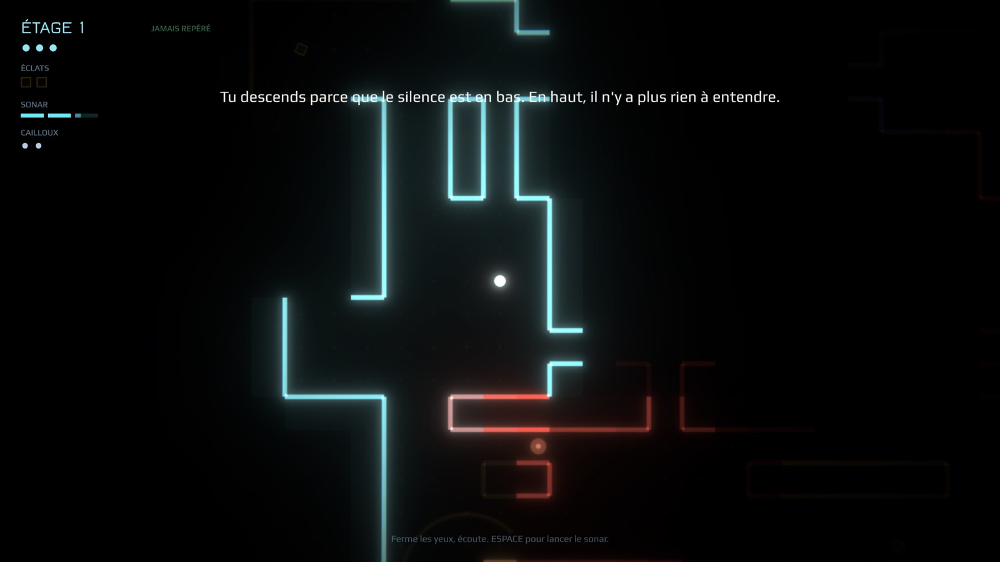
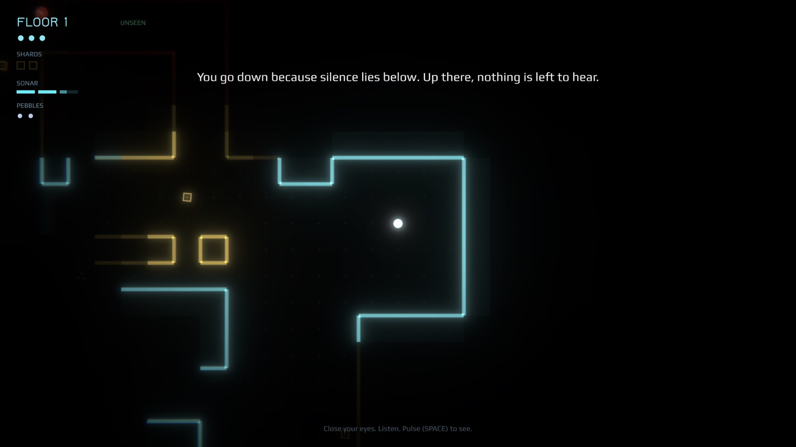
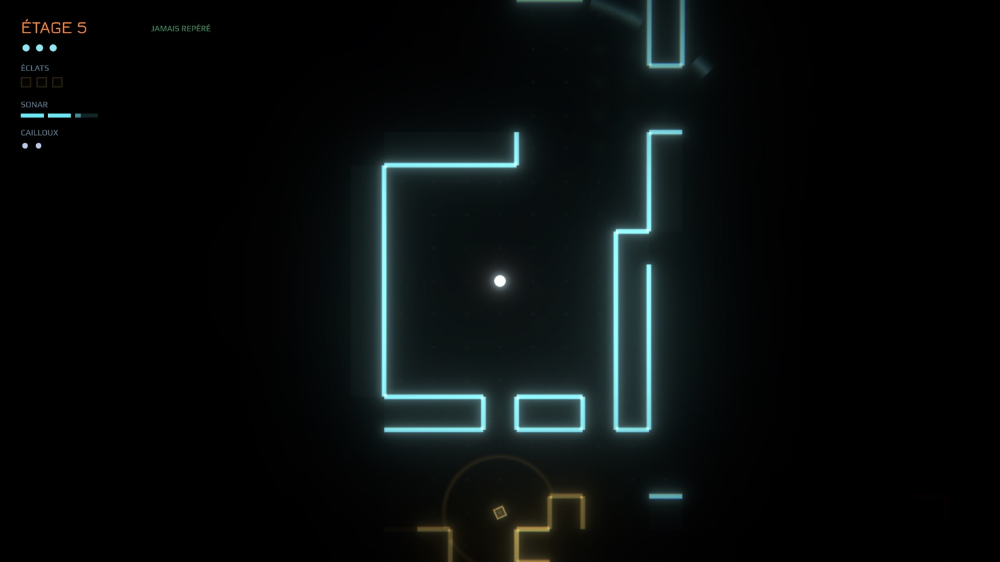
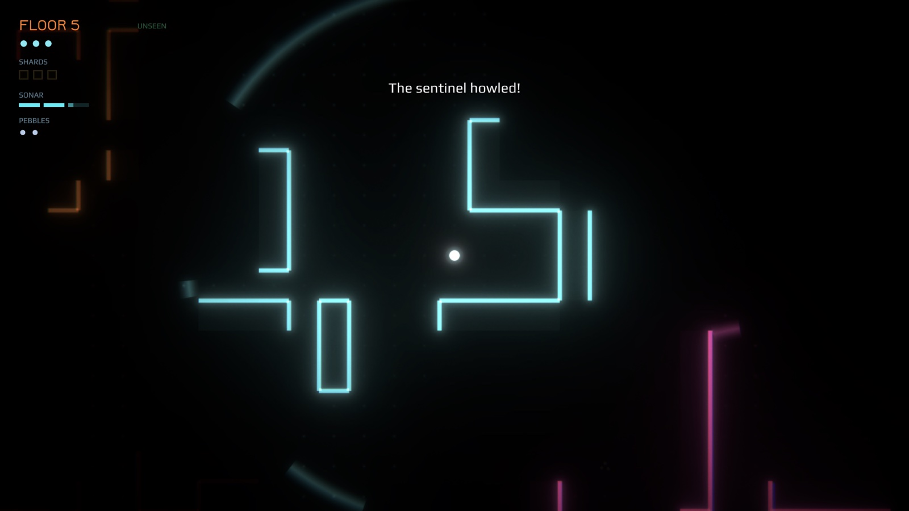
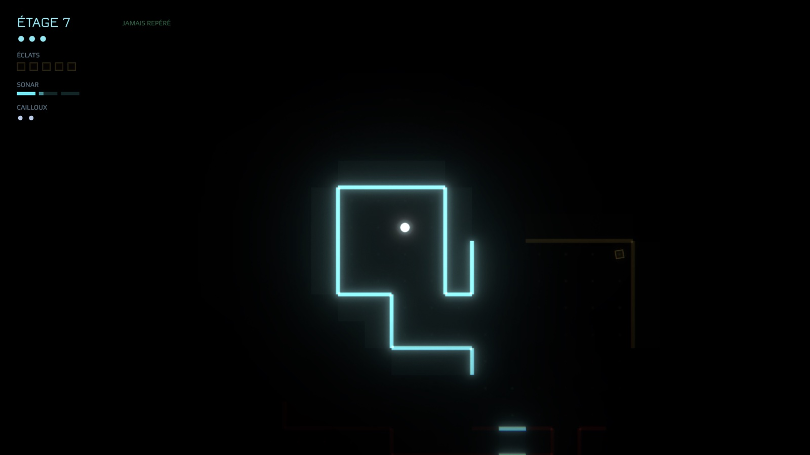
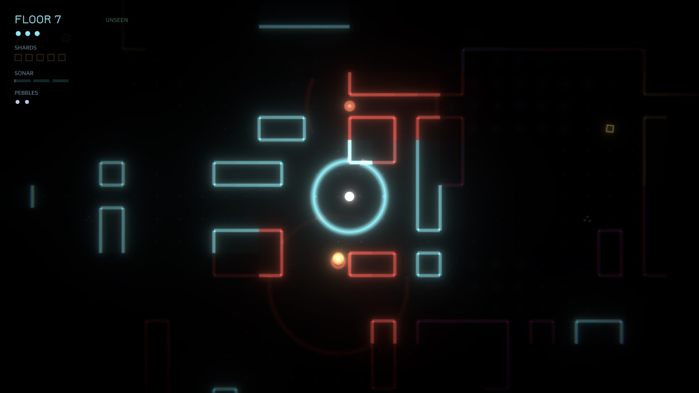
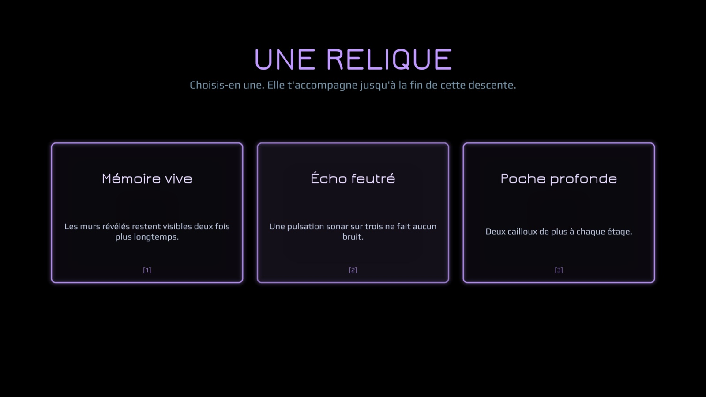
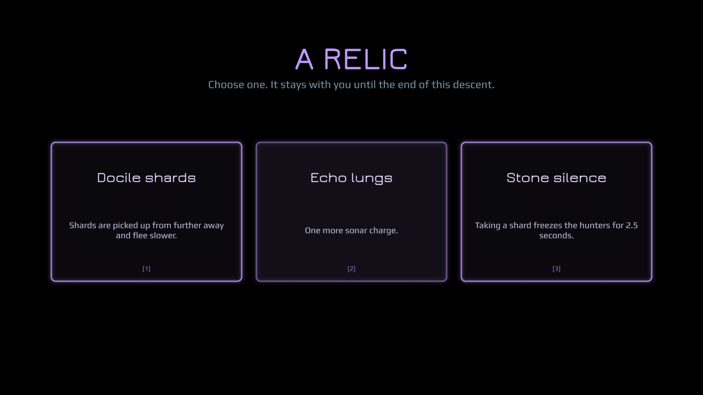
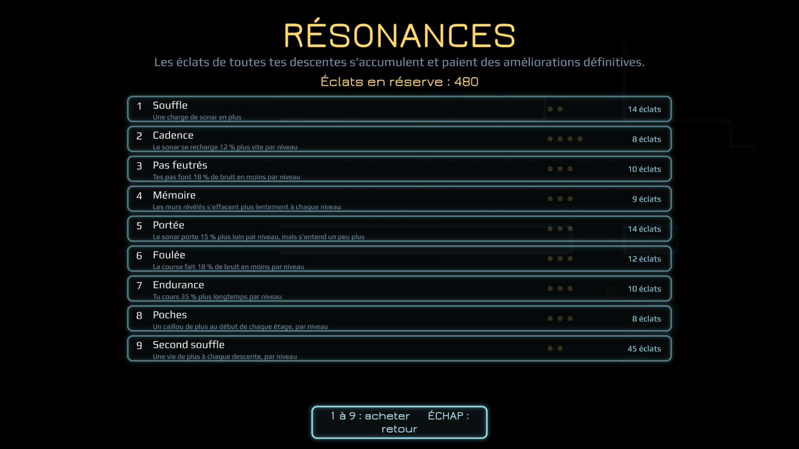
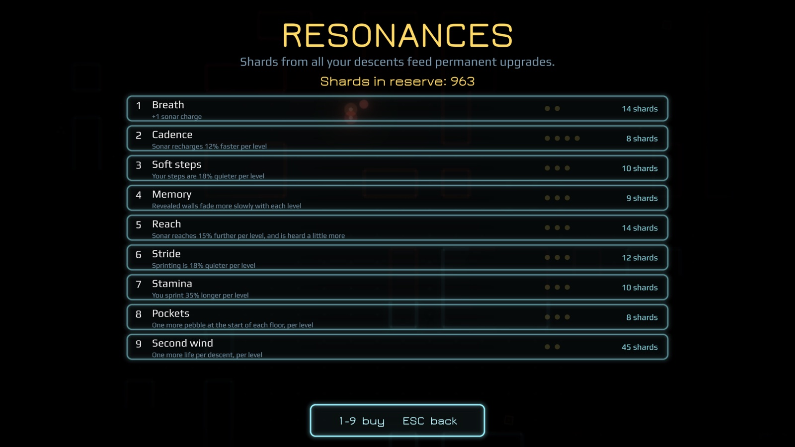
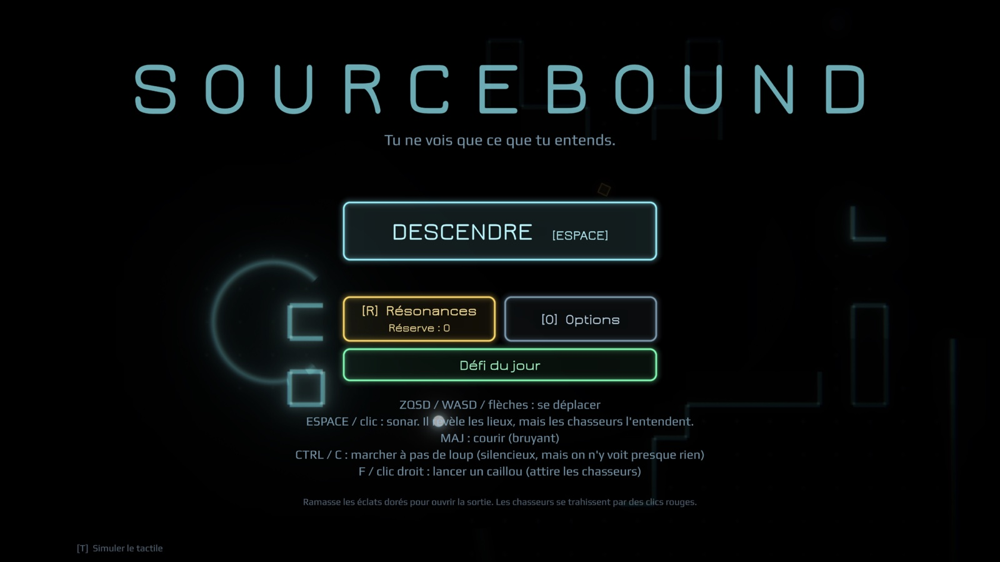
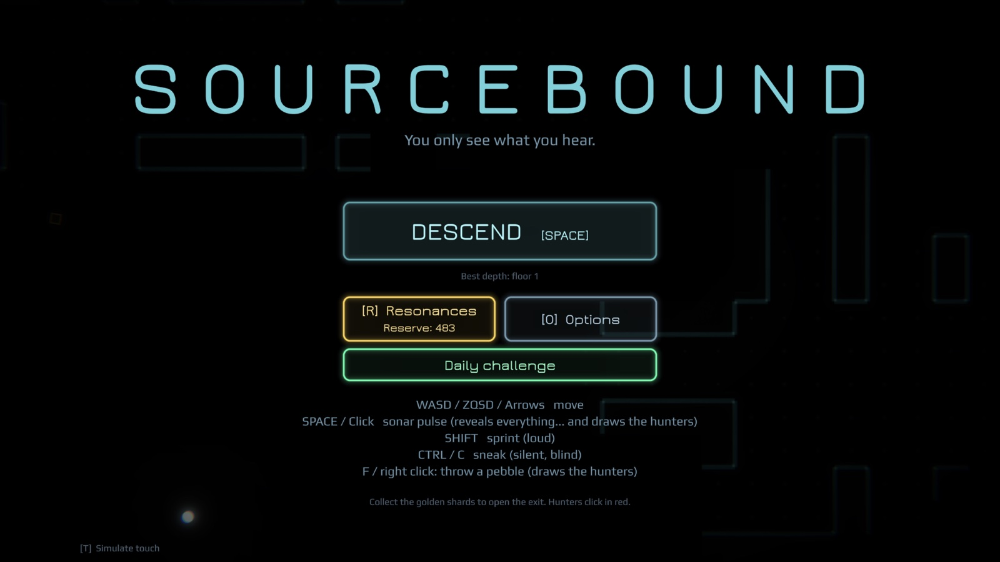
En brefAt a glance
FAQ
L'écran est vraiment noir ?Is the screen really black?
Oui. Rien n'est éclairé en permanence : on ne voit que les contours révélés par les sons, et ils s'effacent. C'est le jeu, pas un réglage à corriger.Yes. Nothing is permanently lit: you only see the outlines revealed by sound, and they fade. That is the game, not a setting to fix.
Faut-il un casque ?Do I need headphones?
Ce n'est pas obligatoire, mais c'est très conseillé : les éclats bourdonnent, la sortie ping, les chasseurs cliquettent, et tout cela se localise à l'oreille. Le jeu est jouable au haut-parleur, plus difficile sans le son.It is not required, but strongly recommended: shards hum, the exit pings, the hunters click, and all of it is placed in space by ear. The game works on a speaker, and gets much harder with the sound off.
Jusqu'où va la version gratuite ?How far does the free version go?
Les huit premiers niveaux sont gratuits, avec le premier niveau de chaque Résonance. La version complète ouvre la descente jusqu'à la Source, le mode sans fin, le défi du jour et tous les niveaux de Résonances. Un seul achat, pas d'abonnement, jamais de publicité.The first eight levels are free, along with the first level of every Resonance. The full version opens the descent all the way to the Source, the endless mode, the daily challenge and every level of Resonances. One purchase, no subscription, and never any ads.
Qu'y a-t-il au bout de la descente ?What is at the bottom of the descent?
La Source du silence, vingt niveaux plus bas. On peut s'arrêter là, ou continuer : au-delà, la descente n'a plus de fin.The Source of silence, twenty levels down. You can stop there, or keep going: past it, the descent has no end.
Une version iPhone ou PC ?An iPhone or PC version?
Le jeu sort d'abord sur Android. Il se joue aussi très bien au clavier, donc une version PC est possible ; rien n'est promis pour iPhone aujourd'hui.The game comes to Android first. It plays well on a keyboard too, so a PC version is possible; nothing is promised for iPhone today.
Une idée, un bug, une descente mémorable ?An idea, a bug, a memorable run?
Écrivez-moi à petitvaisseau.studio@gmail.com : je lis tout et je réponds moi-même.Write to me at petitvaisseau.studio@gmail.com: I read everything and answer myself.